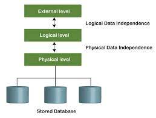

Data Independence
- Data independence can be explained using the three-schema architecture.
- Data independence refers characteristic of being able to modify the schema at one level of the database system without altering the schema at the next higher level.
There are two types of data independence:
1. Logical Data Independence
- Logical data independence refers characteristic of being able to change the conceptual schema without having to change the external schema.
- Logical data independence is used to separate the external level from the conceptual view.
- If we do any changes in the conceptual view of the data, then the user view of the data would not be affected.
- Logical data independence occurs at the user interface level.
2. Physical Data Independence
-
Physical data independence can be defined as the capacity to change the internal schema without having to change the conceptual schema.
- If we do any changes in the storage size of the database system server, then the Conceptual structure of the database will not be affected.
- Physical data independence is used to separate conceptual levels from the internal levels.
- Physical data independence occurs at the logical interface level.
